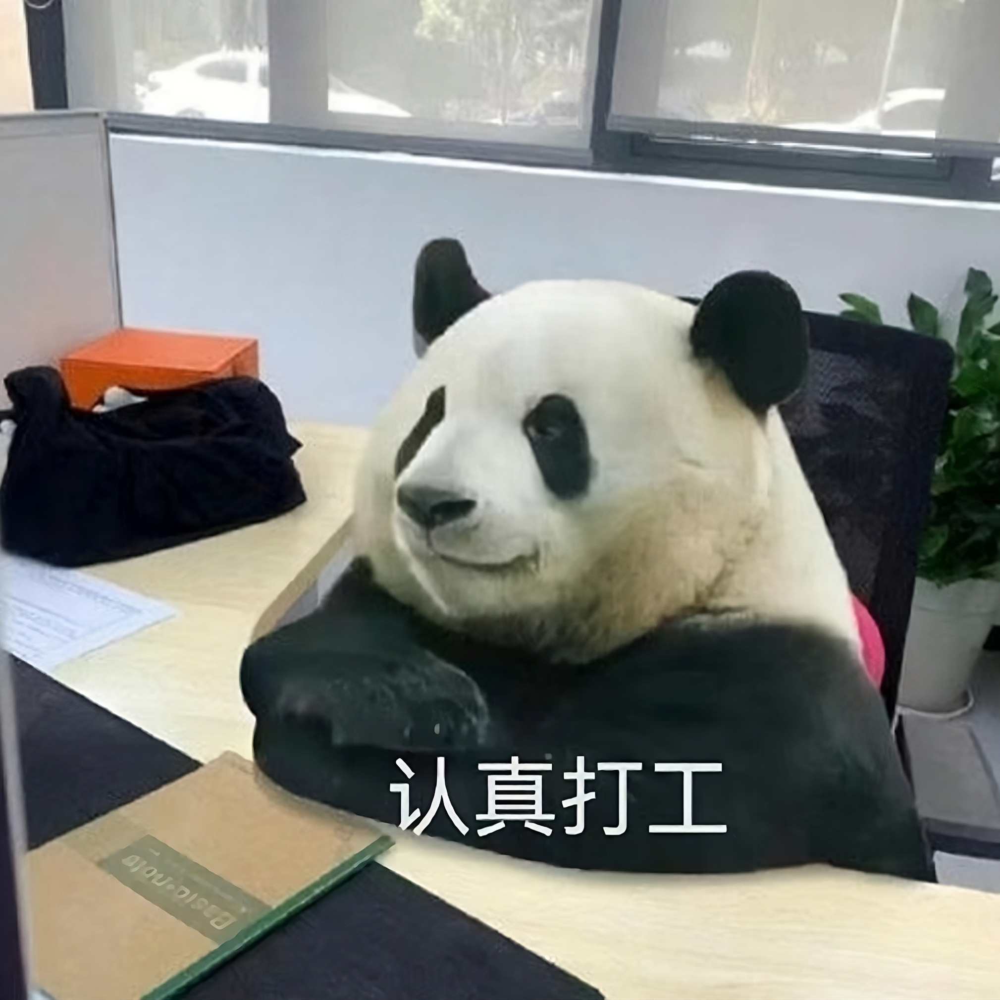
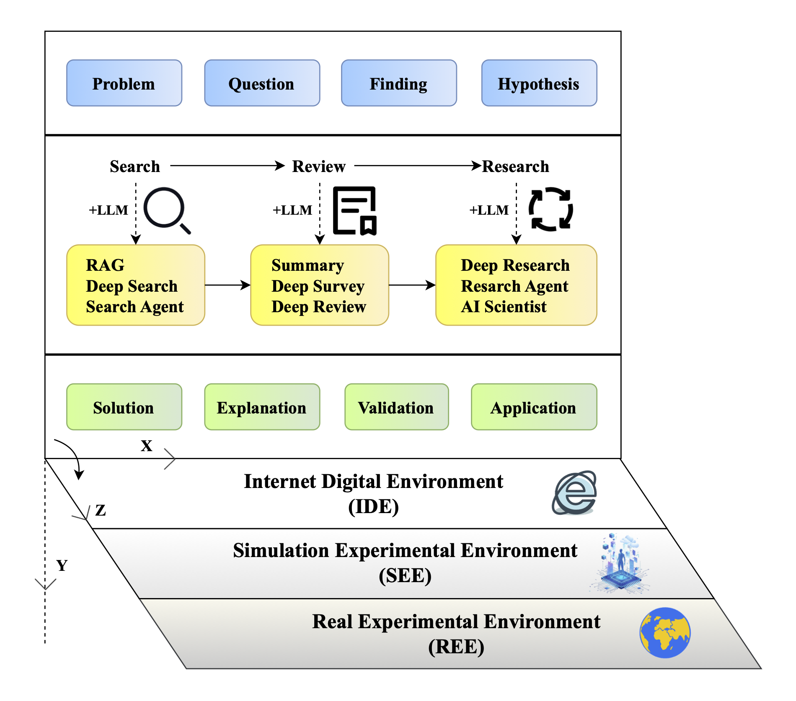
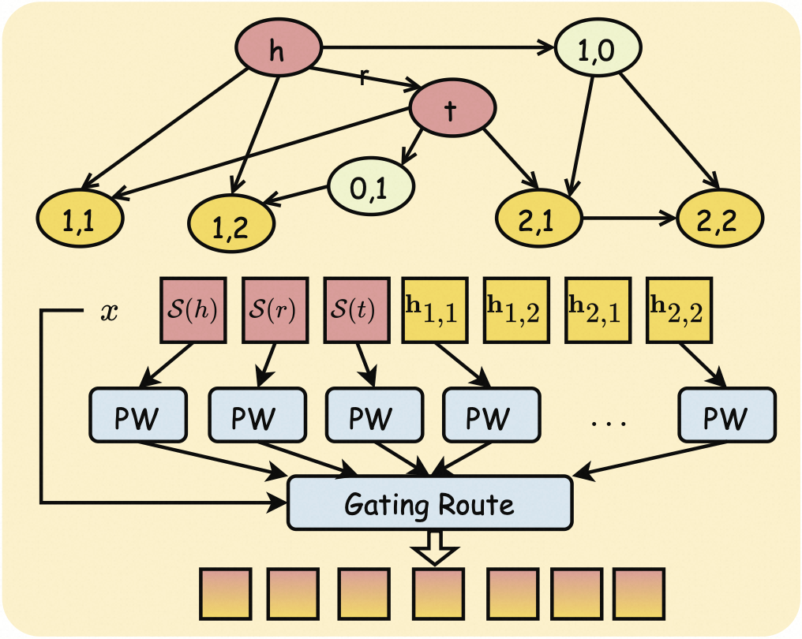
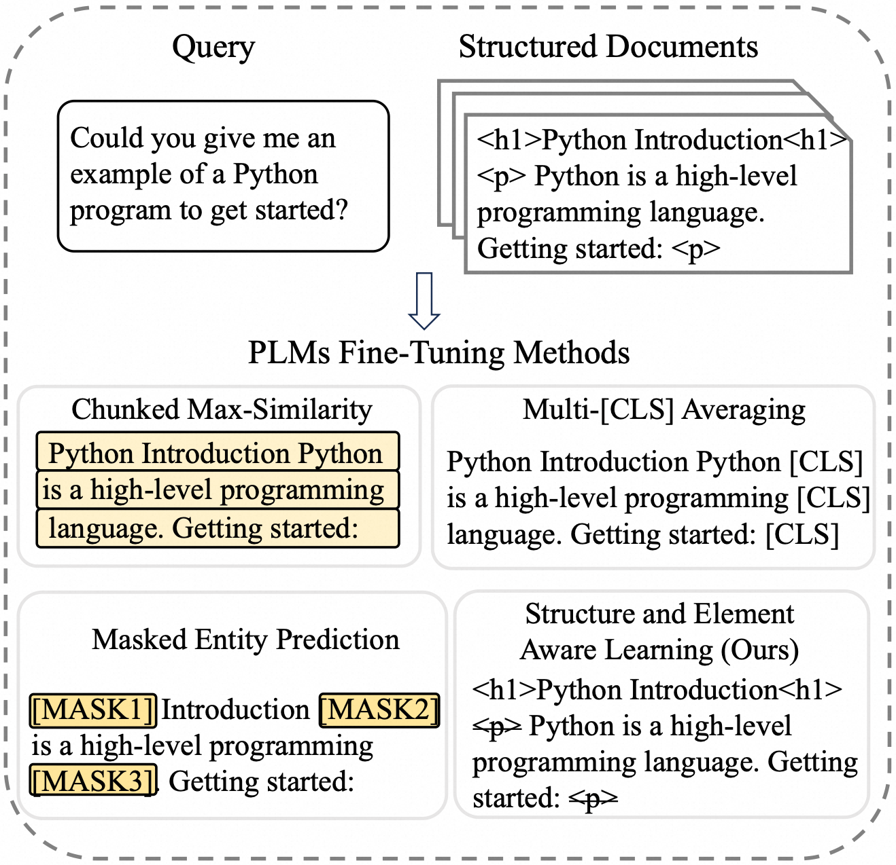
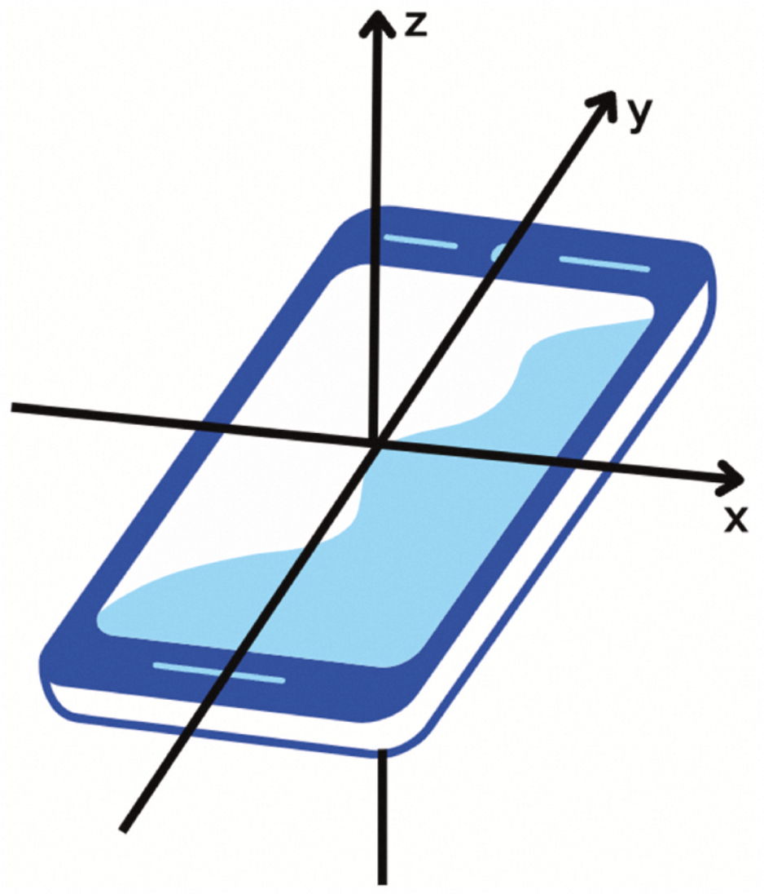
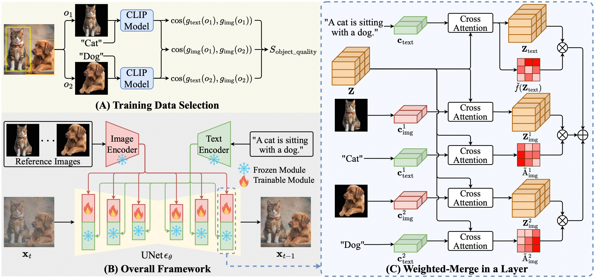

Yipeng Yu (俞一鹏)
Feel free to call me ian if yipeng is hard to say. I'm currently an AI researcher in Taobao & Tmall Group at Alibaba. My current research focuses on GenAI and Agentic AI.
I obtained my Ph.D. degree in Computer Science from Zhejiang University under the supervision of Prof. Gang Pan and Prof. Zhaohui Wu, where I investigated Cyborg Intelligence using bidirectional Brain-Computer Interfaces. During this period, I also visited the National University of Singapore as a visiting scholar under Prof. Kay Chen TAN.
yypzju Aτ 163 Doτ com
Career
| 2023 - Now | Manager & Staff Algorithm Engineer | E-commerce, Taobao & Tmall Group, Alibaba | Hangzhou, China |
| 2018 - 2023 | Tec Leader & Senior Researcher | Games, Interactive Entertainment Group, Tencent | Shanghai, China |
| 2016 - 2018 | Research Scientist | Dialog & IoT, China Research Lab, IBM | Beijing, China |
Paper

This paper provides a deep research of deep research. We position LLMs and Stable Diffusion as the twin pillars of generative AI, and lay out a roadmap evolving from the Transformer to agents. We examine the progress of AI4S across various disciplines. We identify the predominant paradigms of human-AI interaction and prevailing system architectures, and discuss the major challenges and fundamental research issues that remain. AI supports scientific innovation, and science also can contribute to AI growth (Science for AI, S4AI).

In this work, we extend KGED to a four-class classification task to identify which element is incorrect or whether the triple is correct. Directly adapting existing LLM-based methods to this setting yields limited performance, as they fail to effectively exploit the topological information of KGs. To address this issue, we propose a novel topology-injected LLM framework, which precomputes high-order common neighbors between head and tail entities as topological evidence, thereby reducing complexity. Furthermore, we introduce a mixture-of-experts adapter that maps structural and topological evidence into the text embedding space.

We propose SEAL, a novel contrastive learning framework. It leverages structure-aware learning to preserve semantic hierarchies and masked element alignment for fine-grained semantic discrimination. Furthermore, we release StructDocRetrieval, a long structured document retrieval dataset with rich structural annotations. Extensive experiments on both the released and industrial datasets across various modern PLMs, and online A/B testing demonstrate consistent improvements, boosting NDCG@10 from 73.96% to 77.84% on BGE-M3.

This study aims to address this gap by incorporating users' emotional and behavioral indicators into the prediction of short-video viewing behavior. Study 1 was conducted in a controlled laboratory setting, where participants viewed videos on a computer screen while their physiological activity was recorded as an objective measure of emotional responses. Study 2 aimed to enhance ecological validity by having participants view videos on mobile phones, enabling them to swipe between videos as they would in a typical short-video app. Our findings provide valuable insights into the psychological drivers of short video viewing behavior and present a novel, non-intrusive approach to incorporate users’ real-time experiences into recommendation systems.

In this work we investigate the relevance of different positions of the latent image features to the target object in diffusion model, and accordingly propose a weighted-merge method to merge multiple reference image features into the corresponding objects. Next, we integrate this weighted-merge method into existing pre-trained models and continue to train the model on a multi-object dataset constructed from the open-sourced SA-1B dataset.
To free human from laborious video production, this paper proposes the building of VideoMaster, a multimodal system equipped with four capabilities: highlight extraction, video describing, video dubbing and video editing. It extracts interesting episodes from long game videos, generates subtitles for each episode, reads the subtitles through synthesized speech, and finally re-creates a better short video through video editing. Notably, VideoMaster takes a combination of deep learning and traditional computer vision techniques to extract highlights with fine-to-coarse labels, utilizes a novel framework named PCSG-v (probabilistic context sensitive grammar for video) for video description generation, and imitates a target speaker's voice to read the description. To the best of our knowledge, VideoMaster is the first multimedia system that can automatically produce product-level micro-videos without heavy human annotation.
Patent
🇺🇸 US Patents
-
US 10,123,456 B2 Granted
Method and System for Real-Time Data Processing
View Patent → -
US 11,987,654 A1 Pending
AI-Driven Optimization Algorithm for Cloud Computing
🇨🇳 Chinese Patents
-
ZL 2023 1 0123456.7 Authorized
一种基于深度学习的数据处理方法及系统
查看原文 →
Statistics
👥 Visitors: -- | 👁️ Page Views: --